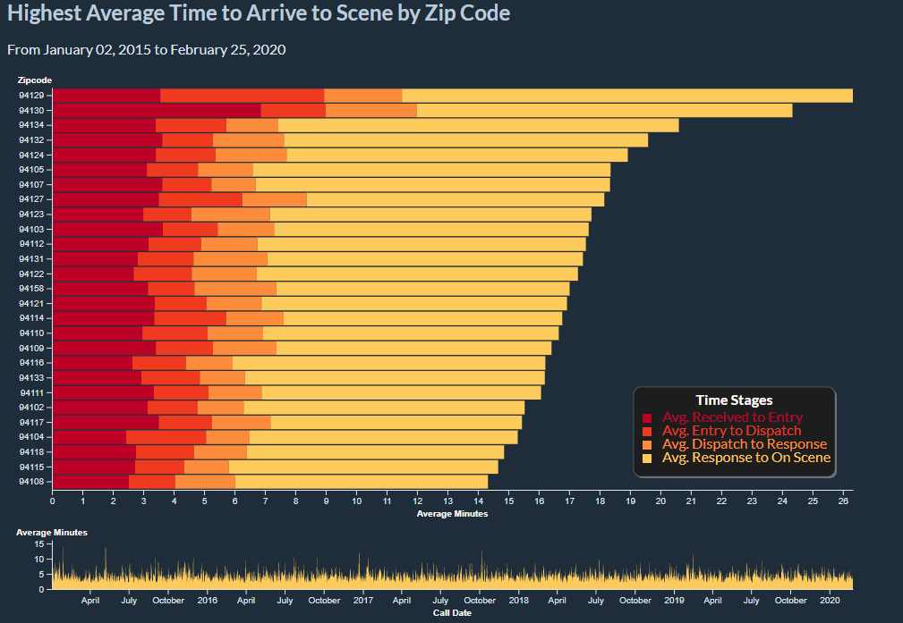

Visualizations
Highest Average Time to Arrive to Scene by Zip Code
Caption: This is a stacked bar chart that show the average time it takes for the SF Fire Department to react to calls in different zip codes. This is broken up into stages and colored using the color theme of this site. The time series is linked to the stacked bar chart. The time series charts total average time up to on scene by call date in an area chart. This supports brushing so you can select the date range you want in the area chart and this will be reflected in the the stacked bar chart. NOTE that the axes will change based on the selection. It is sorted by highest average time to scene per zip code. The data is from 2015 onward. To see more about the data see here.
An important thing to note for understanding this visualization is how the times are broken up. The diagram shows the general flow of steps that are involved in a call for service. This visualization focuses on the received time up to the on scence time. The choice was made due to curiosity about how long a call for service may take for help to arrive in different areas. Since not all records included all times, this visualization opts to remove those records entirely to be more clear. This visualization only shows calls that resulted in the Fire Department arriving at the scene. Hover and wait over a box for more details about the call type. View the data page for additonal details about the data.
Another thing to note is that the length of the entire stacked bar represents the average time it took to arrive on scene for a given zipcode in the given time frame. This may raise questions about improperly calculated averages since the sum of partial averages is not the same as the total average. However, since all null records have been dropped, the count for each segment of the bar is the same for each stacked bar. The count is displayed in the tooltip for each bar segment. Visit StackExchange for more details about why averages of averages are usually inaccurate.
Data Encoding
The data has already been filtered for 2015 and onward. For more details about how the data is filtered, see the data page. Note that these visualizations do not remove outliers. However, we can use this visualization to identify where the outliers come from.
The stacked bar chart is encoded by average time to arrive on scene and zipcode. It is sorted by the highest number of minutes to arrive on scene. The area chart is encoded by call date and average minutes to arrive on scene. All null and empty records have been removed.
Instructions
The colors of the bars are more vibrant to pull it to the foreground. In order to emphasize the bars more, hovering over the bars will lower opacity of the other categories. This also allows easier comparison between different bar lengths of the same category. This can also be done by hovering over the legend labels.
To see details about each bar, hover over the bar for a tooltip. Further explanation of the tooltips are defined below:
|
|
|
|---|---|
| Type | The type of the bar segment that is being hovered over. This is the same as the labels in the legend. |
| Average | This is the length of the bar segment in minutes. This would be the average minutes from the end of one stage to the next stage. |
| Total Average | This is the length of the entire stacked bar in minutes. This represents the average minutes it took for the fire department to arrive on scene for the given zipcode. |
| Total Count | This is the total number of calls being represented in the given bar chart. |
| Zipcode | This is the zipcode the bar represents. Hover over for the neighborhood mapping. |
Tooltips were also added to the zip codes to show which neighborhood it corresponds to. Note that each zip code maps to multiple neighborhoods. To remain consistent with what the Fire Department uses, the neighborhood mapping was drawn from the how the data was labeled in the dataset. If the zipcode was improperly labeled, the tooltip will also show the same inconsistencies. However, this seemed to be the most accurate way to represent the information.
To encourage data exploration, brushing on the x axis for the area chart is supported. This will filter the stacked bar chart based on the time range of the brush. Click and drag in the area chart to create a range and click out of the range in the area chart to reset. You can adjust the brushed selection by moving it or by adjusting the size. Since it is a little difficult to see what date range you have selected, the date range is displayed (and is updated) above the stacked bar chart.
A sample of using the visualization is shown here:
Analysis
From this visualization we can learn several things:
- It seems that 94129 and 94130 show up near the top in many date ranges. This makes sense since it is the Presidio and Treasure Island, respectively. This may mean that the Fire Department might need an additional station in either of those places. Although it should be noted that the visualization does not account for density of calls. Luckily, other visualizations on this site show the density.
- The time from response to arrival always seems to take the most time, so any attempt at alleviating traffic for the Fire Department would help immensely. Additional or closer stations may also expedite arrivals.
- We can also see dramatic spikes in the area chart which implies that there are outliers or events that took substantially longer than expected. Using brushing, we can confirm this is the case and narrow the date range of the incidences. For example, 94111 had a very high entry time in the time frame of December 24th 2016 to December 27th, 2016.